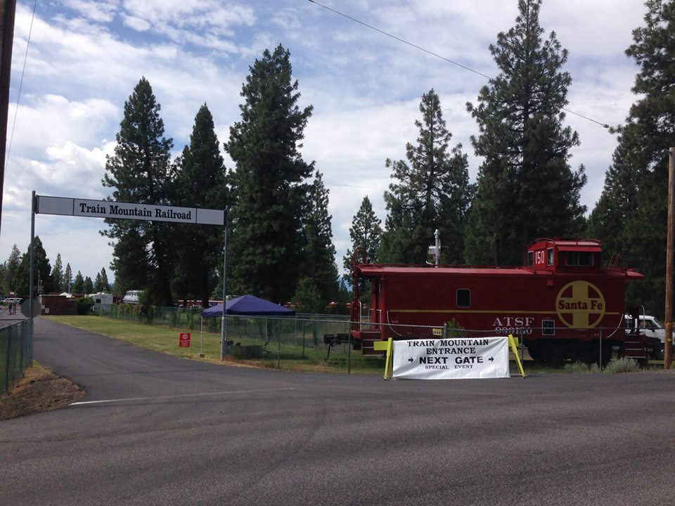

Last updated: 7 September, 2025
| Website: | www.trainmountain.org |
| Email: | info@tmrr.org |
| Location: | 36941 S Chiloquin Rd, Chiloquin, OR 97624 |
| GPS: | 42.559896, -121.886451 Parking, I think. |
| Phone: | 541-783-3030 |
Subject to change. Check website for latest information: | |
| Summer hours: | Mid-May through mid-October The Visitor’s Center and walking tours are open 9 am to 3 pm everyday. Closed July 4th. Rail tours operate between 10 am and 2:30 pm Sunday to Friday. Saturday visitors are encouraged to ride the trains at the Klamath & Western Railroad instead. |
| Winter hours: | Mid-October through mid-May The Visitor’s Center is closed but guests may check in at the office and explore the Walking Tour. The park is open 10 am to 2 pm Monday through Friday. Rail tours do not operate during winter months. |
The 2200-acre property in Southern Oregon known as Train Mountain is owned by Train Mountain Institute (TMI). Dedicated to railroad education and history, Train Mountain has over 32 miles of 7.5-inch gauge track making it the World’s Longest Rideable Miniature Hobby Railway according to the Guinness Book of World Records. Train Mountain Museum has over 50 full-sized rail cars, maintenance-of-way equipment, and other pieces in its collection, offering a unique experience that brings the enchantment of railroading to life on a grand scale. Tours are provided by rail on 1/8 scale trains, but visitors are also welcome to explore by walking. 1
Friends of Train Mountain is dedicated to building long runs of 7.5 inch gauge model railroad track. MORE TRACK, MORE FUN. 2
The Triennial is held every three years. The schedule was interrupted by COVID. The triennial was last held June 14th to June 29th, 2025.
There are some full sized train cars here. Looking at Google Earth, one appears it "could" be a locomotive, but there is no mention of one.